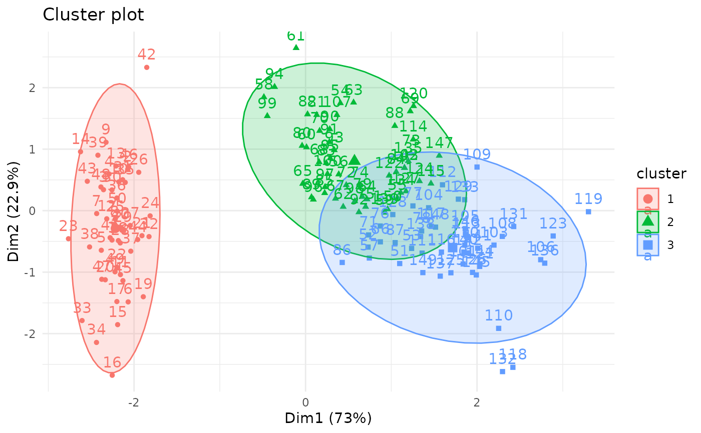
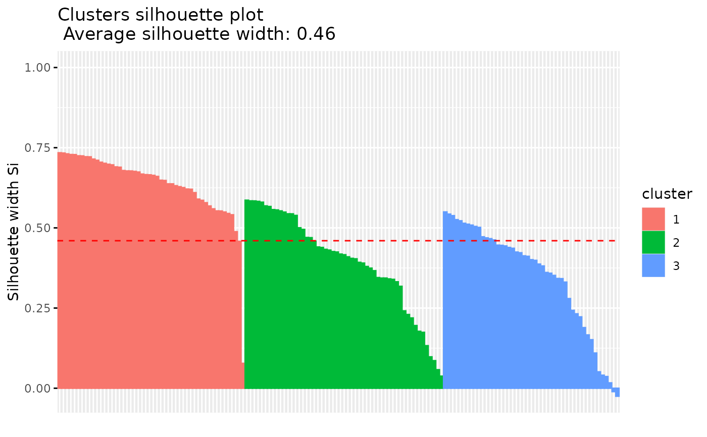

Silhouette (Si) analysis is a cluster validation approach that
measures how well an observation is clustered and it estimates the average
distance between clusters. fviz_silhouette() provides ggplot2-based elegant
visualization of silhouette information from i) the result of
silhouette(), pam(),
clara() and fanny() [in
cluster package]; ii) eclust() and hcut() [in
factoextra].
Read more: Clustering Validation Statistics.
Arguments
- sil.obj
an object of class silhouette: pam, clara, fanny [in cluster package]; eclust and hcut [in factoextra].
- label
logical value. If true, x axis tick labels are shown
- print.summary
logical value. If true a summary of cluster silhouettes are printed in fviz_silhouette().
- ...
other arguments to be passed to the function ggpubrplus::ggpar().
Details
- Observations with a large silhouhette Si (almost 1) are very well clustered.
- A small Si (around 0) means that the observation lies between two clusters.
- Observations with a negative Si are probably placed in the wrong cluster.
Author
Alboukadel Kassambara alboukadel.kassambara@gmail.com
Examples
set.seed(123)
# Data preparation
# +++++++++++++++
data("iris")
head(iris)
#> Sepal.Length Sepal.Width Petal.Length Petal.Width Species
#> 1 5.1 3.5 1.4 0.2 setosa
#> 2 4.9 3.0 1.4 0.2 setosa
#> 3 4.7 3.2 1.3 0.2 setosa
#> 4 4.6 3.1 1.5 0.2 setosa
#> 5 5.0 3.6 1.4 0.2 setosa
#> 6 5.4 3.9 1.7 0.4 setosa
# Remove species column (5) and scale the data
iris.scaled <- scale(iris[, -5])
# K-means clustering
# +++++++++++++++++++++
km.res <- kmeans(iris.scaled, 3, nstart = 2)
# Visualize kmeans clustering
fviz_cluster(km.res, iris[, -5], ellipse.type = "norm")+
theme_minimal()

# Visualize silhouhette information
require("cluster")
sil <- silhouette(km.res$cluster, dist(iris.scaled))
fviz_silhouette(sil)
#> cluster size ave.sil.width
#> 1 1 50 0.64
#> 2 2 53 0.39
#> 3 3 47 0.35

# Identify observation with negative silhouette
neg_sil_index <- which(sil[, "sil_width"] < 0)
sil[neg_sil_index, , drop = FALSE]
#> cluster neighbor sil_width
#> [1,] 3 2 -0.01058434
#> [2,] 3 2 -0.02489394
if (FALSE) { # \dontrun{
# PAM clustering
# ++++++++++++++++++++
require(cluster)
pam.res <- pam(iris.scaled, 3)
# Visualize pam clustering
fviz_cluster(pam.res, ellipse.type = "norm")+
theme_minimal()
# Visualize silhouhette information
fviz_silhouette(pam.res)
# Hierarchical clustering
# ++++++++++++++++++++++++
# Use hcut() which compute hclust and cut the tree
hc.cut <- hcut(iris.scaled, k = 3, hc_method = "complete")
# Visualize dendrogram
fviz_dend(hc.cut, show_labels = FALSE, rect = TRUE)
# Visualize silhouhette information
fviz_silhouette(hc.cut)
} # }